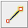

JOSM Quickstart¶
JOSM ist ein funktionsreicher, erweiterbarer, offline Desktop Editor für OpenStreetMap (OSM) Daten, der in Java geschrieben wurde.
Er unterstützt sowohl das Laden von unabhängigen GPX Tracks und GPX Track Daten als auch das Editieren von existierenden Knoten (Punkten), Wegen (Linien), Meta-Tags (Name/Wert Information) und Relationen (Anordnung von Punkten und Linien) aus der OSM Datenbank. GPX Tracks werden in der Regel im Vorfeld über einen GPS Empfänger oder anderen Quellen heruntergeladen.
Diese Quickstart-Anleitung erklärt die grundsätzliche Bedienung des Java OpenStreetmMap Editors.

Load a sample (ficticious) map¶
Öffnen wir nun eine OSM Beispieldatei, an der wir die grundlegende Erstellung von Karten mit JOSM lernen. Da diese Karte keinen realen Ort repräsentiert, werden wir sie natürlich nicht in Openstreetmap speichern.
Laden wir nun diese Datei herunter: sample.osm
Öffne die eben heruntergeladene Datei in JOSM durch Auswählen der Schaltfläche „Öffnen“ oben links.

Finde die Datei sample.osm. Sie befindet sich wahrscheinlich im Ordner „Downloads“, es sei denn Du hast sie woanders gespeichert.
Click on it, and then click “Open”. You should now see a sample map that looks like this:

Bemerkung
Du wirst diese Daten nutzen, um verschiedene Bearbeitungstechniken auszuprobieren. Niemals jedoch sollen diese fiktiven Daten in die Datenbank hochgeladen werden.
Navigate the map¶
Um die Karte nach links, rechts, oben oder unten zu bewegen, halte die rechte Maustaste gedrückt und bewege dabei die Maus.
Es gibt verschiedene Arten, in die Karte hinein- oder hinauszuzoomen. Mit einer Maus ist das Mausrad hierfür nutzbar. Bei einem Notebook ohne Maus kannst Du den Maßstabsregler links oben in der Kartenansicht verwenden. Benutze die linke Maustaste, um den Regler zu fassen und verschiebe ihn bei gedrückt gehaltener Taste.

Sieh‘ Dir die Beispielkarte an. Es gibt eine Reihe verschiedener Objekte: Einen Fluss, einen Wald, einige Gebäude und Straßen sowie ein paar Geschäfte. Um ein Objekt auszuwählen, klicke es mit der linken Maustaste an.
Punkte, Linien und Flächen¶
Beachte beim Auswählen verschiedener Objekte auf der Karte, dass es drei Typen von Objekten gibt: Punkte, Linien und Flächen.
Punkte beschreiben eine einzelne Position, die durch Symbole dargestellt wird. Auf dieser Beispielkarte befinden sich zwei Punkte, ein Schuhgeschäft und ein Supermarkt. Das Schuhgeschäft wird durch ein Schuhsymbol und der Markt durch einen Einkaufswagen dargestellt.
Es gibt auch mehrere Linien auf der Karte, die Straßen darstellen. Wenn man genau hinschaut, wird man sehen, dass es innerhalb der Linien auch Punkte gibt. Diesen Punkten sind keine Symbole oder andere Informationen zugeordnet, aber sie helfen zu definieren, wo sich die Linie befindet.
Schließlich gibt es zahlreiche Formen auf der Beispielkarte, die verschiedene Orte darstellen – einen Wald, einen Fluss, einen Park und Gebäude. Eine Form wird verwendet, um einen Bereich darzustellen, z. B. ein Feld oder ein Gebäude. Eine Form ist genau wie eine Linie – der einzige Unterschied ist, dass die Linie an der gleichen Stelle beginnt, an der sie endet.
Es ist leicht, sich eine Karte so vorzustellen, dass sie diese drei grundlegenden Objekttypen enthält – Punkte, Linien und Formen. In OpenStreetMap gibt es eine spezielle Terminologie, die Du kennenlernen wirst. In OSM werden Punkte eigentlich Knoten und Linien als Weg bezeichnet. Eine Form wird als geschlossener Weg bezeichnet, da es sich nur um eine Linie handelt, die an derselben Stelle endet, an der sie beginnt.
Du wirst feststellen, dass bei der Auswahl eines Objekts rechts neben der Karte in einem Fenster mit dem Namen „Merkmale“ eine Liste angezeigt wird. Diese werden als Tags bezeichnet. Tags sind Informationen, die an einen Punkt, einer Linie oder eine Form gebunden sind und beschreiben, worum es sich handelt. Weitere Informationen zu Tags finden Sie in einem späteren Kapitel. Im Moment müssen Sie nur wissen, dass diese Informationen helfen zu beschreiben, ob unser Objekt ein Wald, ein Fluss, ein Gebäude oder etwas anderes ist.
Überlege wie es ist, eine Karte von Hand zu zeichnen und wie Du auch dort Punkte, Linien und Formen zeichnest. Welche anderen Orte werden am besten durch Punkte, Linien oder Formen dargestellt?
Ändern von Objekten¶
- Wähle den Wald auf der linken Seite der Karte aus. Achte darauf, auf die Linie um den Wald zu klicken, nicht auf einen der Punkte auf der Linie.
- Halte nun die linke Maustaste gedrückt und bewege die Maus. Du solltest nun in der Lage sein, den Wald an eine neue Position auf der Karte zu verschieben.
- Klicke auf einen der Punkte auf der Linie rund um den Wald. Halte die linke Maustaste gedrückt und bewege die Maus. Du solltest in der Lage sein, den Punkt zu bewegen. Auf diese Weise kannst Du die Form eines Objekts ändern oder einen Punkt verschieben.
Zeichnen¶
- Auf der linken Seite von JOSM befindet sich eine Spalte von Schaltflächen. Viele dieser Schaltflächen öffnen neue Fenster auf der rechten Seite, welche weitere Informationen zur Karte bereitstellen. Die wichtigsten Schaltflächen befinden sich jedoch oben in dieser Spalte. Diese Schaltflächen ändern, was Sie mit der Maus tun können.
- Die oberen Schaltflächen in dieser Spalte sind die, die Du am meisten verwenden wirst. Sie werden zum Auswählen von Objekten und zum Zeichnen neuer Objekte verwendet.
- Bisher hast Du das Auswahl-Werkzeug verwendet, das wie folgt aussieht:

Before you draw, you need to make sure that nothing is selected.
Klicke in den schwarzen leeren Bereich auf der Karte, um sicherzustellen, dass nichts ausgewählt ist.
Klicke auf das zweite Werkzeug, das Zeichenwerkzeug.
Suche einen leeren Bereich auf der Karte, und doppelklicke mit der Maus. Dadurch wird ein einziger Punkt erstellt.
- Um eine Linie zu zeichnen, klicke Sie mit der Maus. Bewege die Maus und klicke erneut. Fahre fort, bis Du mit der Linie zufrieden bist. Um die Zeile zu beenden, doppelklicke mit der Maus.
- Zeichne eine Form auf die gleiche Weise, wie eine Linie, aber beende die Form, indem Du auf den Punkt doppelklickst, an dem Du die Linie gestartet hast.
Vorlagen hinzufügen¶
Jetzt wissen wir, wie man Punkte, Linien und Formen zeichnet, aber wir haben immer noch nicht definiert, was sie darstellen. Wir wollen sagen können, dass unsere Punkte Geschäfte, Schulen oder etwas anderes sind und ob unsere Formen Felder, Gebäude oder etwas anderes sind.
Klicke auf das Werkzeug „Auswählen“ in der Arbeitswerkzeugleiste auf der linken Seite.
Select one of the objects that you drew with the Draw tool.
On the top menu, click “Presets” and choose the type of location you would like to define.
Wenn Du auf eine Vorlage klickst erscheint ein Formular, in dem Du nach weiteren Informationen gefragt wirst. Du musst nicht jedes Feld ausfüllen, aber kannst aber einige der wichtigen Felder hinzufügen, z. B. den Namen des Objekts.
Wenn Du mit der Eingabe der Informationen fertig bist, wähle „Vorlage anwenden“. Wenn alles gut gelaufen ist, sollte das bearbeitete Objekt (Punkt, Linie oder Form) die Farbe ändern oder ein Symbol anzeigen. Das liegt daran, dass Du definiert hast, um was es sich dabei handelt.
Erstelle Deine eigene Karte¶
Zeichnen wir nun eine Karte, um die Techniken zu üben, die Du gelernt hast. Du magst vielleicht eine Karte, die Du zuvor auf Papier gezeichnet hast, neu zeichnen.
- Bewege die Karte von der Beispielkarte weg. Halte die rechte Maustaste gedrückt und bewege die Maus, bis Du einen schönen leeren Bereich zum Zeichnen hast.
- Benutze das Zeichnen-Werkzeug, um Punkte, Linien und Formen zu erstellen. Beschreibe, was Deine Objekte sind, indem Du aus dem Menü „Vorlagen“ auswählst.
- Wenn Du fertig bist solltest Du eine eigene Karte haben, ähnlich der Beispielkarte, die wir in der Datei „sample.osm“ geöffnet haben.
Entfernen der Beispielebene¶
Sobald Du Dich mit diesen grundlegenden Bearbeitungstechniken wohl fühlst, möchtest Du Dich vielleicht dem Kartieren wirklicher Dinge widmen.
Bemerkung
Es ist sehr wichtig, dass Du zuerst die Ebene mit den Beispieldaten entfernst. Diese Daten sind fiktiv und dürfen nicht in die OpenStreetMap-Datenbank hochgeladen werden (neuere JOSM-Releases verhindern dies automatisch).
Wähle im Fenster Ebenen oben rechts auf dem Bildschirm die Ebene sample.osm aus. Klicke dann auf das Papierkorbsymbol in der unteren rechten Ecke dieses Fensters. Alternativ kannst Du aus dem Kontextmenü der Ebene „Entfernen“ auswählen.
Was kommt als Nächstes?¶
- Probiere die LearnOSM-Dokumentation aus, aus der dieser Schnellstart abgeleitet wurde: https://learnosm.org/de/josm/start-josm/
- Um die Bearbeitung fortzusetzen, musst Du zunächst echte Daten herunterladen. Dies wird im nächsten Kapitel erläutert: https://learnosm.org/en/josm/more-about-josm/
- Webseite: https://josm.openstreetmap.de/